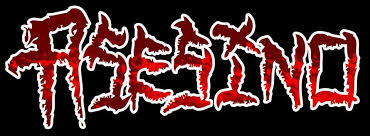
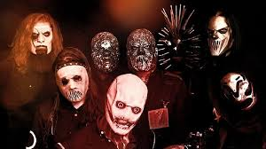

La pagina se trata de algunos artistas y canciones que me gustan ya que disfruto mucho de la musica.
Enjambre es un grupo de rock contemporaneo, procedente de Fresnillo, Zacatecas. Si bien sus integrantes son originarios de Fresnillo, Zacatecas, México, la banda fue fundada en Santa Ans, California, Estados Unidos.
Asesino es una banda mexicano-estadounidense de Death Metal y Grindcore, poseen líricas en español y tratan temas como la muerte, la violencia o la perversión.
Es un músico, rapero y cantante estadounidense. Ha publicado ocho álbumes solistas y tres álbumes colaborativos bajo el pseudónimo "Ghostemane", mezclando elementos del heavy metal, el hip hop y la música industrial.
Es un rapero mexicano. Sus álbumes más destacados son "Smile", "Sin maletas" "Ataraxia" y "Sui Generis"
Kanye West es un rapero, productor discográfico, diseñador de moda y empresario estadounidense.
Slipknot es una banda estadounidense de metal alternativo formada en 1995 en Des Moines, Iowa, Estados Unidos. Sus integrantes en la actualidad son Corey Taylor, Jim Root, Mick Thomson, Shawn Crahan y Sid Wilson.
A través de 15 tracks, Charles nos lleva con su característico estilo vocal sobre bases que marcan el sello del rapero. De estos 15 temas, tres ya cuentan con un video oficial en su cuenta de YouTube. El primero alió el 26 de julio de este año y ya cuenta con casi tres millones de vistas, se llama «Voy a estar bien»
es una obra de arte desde mi punto de vista, una mezcla de Metal industrial, Black Metal y Trap americano, la voz de Ghostemane es brutal en este disco y demostro dominar muy bien la voz distorcionada, guturales, screamos etc.
VULTURES 1 es el álbum de estudio debut del superdúo de hip hop estadounidense ¥$, compuesto por los DJs y raperos Kanye West y Ty Dolla Sign. El álbum tiene apariciones especiales de YG, Playboi Carti, Travis Scott.
The Life of Pablo es el séptimo álbum de estudio del rapero Kanye West. El álbum fue publicado por el sello G.O.O.D. Music, Roc-A-Fella Records y Def Jam Recordings en febrero de 2016. El álbum se inspira de manera parcial en la vida y obra del apóstol san Pablo.
Antennas to Hell es el primer álbum recopilatorio de grandes éxitos de la banda de metal alternativo estadounidense Slipknot. Salió a la venta el 23 de julio de 2012 en el Reino Unido y 24 de julio de 2012 en Estados Unidos.
Ciencia de la lluvia
Facts
Eyeless
Vamos A Dar El Roll
Hydrochloride